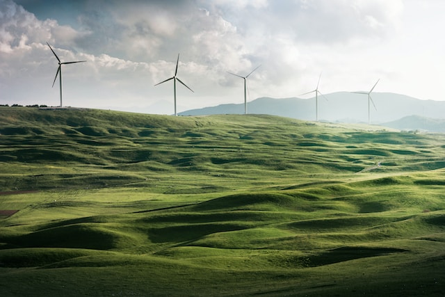

|
Home
|
Energía
|
Comida y Agua
|
Objetivos de Desarrollo Sustentable
|

| Consumo de Energía Responsable Economía Circular
Se busca lograr esta meta desacoplando el crecimiento de recursos con la explotación de recursos. Se busca fomentar patrones de consumo y producción sostenibles que no sean dañinos para el ambiente. Para lograr esto se necesita mejorar el acceso a los servicios básicos como el agua y la comida. Se necesitan crear trabajos estables y decentes que ayuden a reducir el impacto ambiental de empresas, sectores y economías.
Una forma sencilla de ahorrar energía es apagar los electrodomésticos y dispositivos electrónicos cuando no los estés utilizando. Muchos de ellos consumen energía en modo de espera, por lo que desconectarlos de la corriente puede marcar la diferencia. Utiliza bombillas de bajo consumo, como las bombillas LED. Estas bombillas son más eficientes y duraderas que las incandescentes, lo que te permite ahorrar energía y reducir tus costos de electricidad. Aprovecha al máximo la luz natural abriendo cortinas y persianas durante el día. La luz natural puede iluminar tu hogar sin la necesidad de encender luces artificiales, lo que reduce el consumo de energía. Considera la posibilidad de utilizar energía renovable en tu hogar. Instalar paneles solares en el techo o utilizar turbinas eólicas puede ayudarte a generar tu propia energía limpia y reducir tu dependencia de fuentes de energía no renovables. |
 COMECE Energía Asequible para Todos Vatican News "La Iglesia pide un acceso justo a la energía asequible para todos, especialmente para los más vulnerables" (COMECE, 2022) México Busca Duplicar la Generación Renovable El País "Los expertos señalan que la nueva meta requerirá de un cambio radical en la política energética del Gobierno" (Cullell M, 2022) Cómo Consumir Luz de Manera Eficiente en los Hogares Mexicanos BBVA "El uso de los electrodomésticos en el hogar son los que generan más gasto en el consumo eléctrico" (BBVA, 2022) |